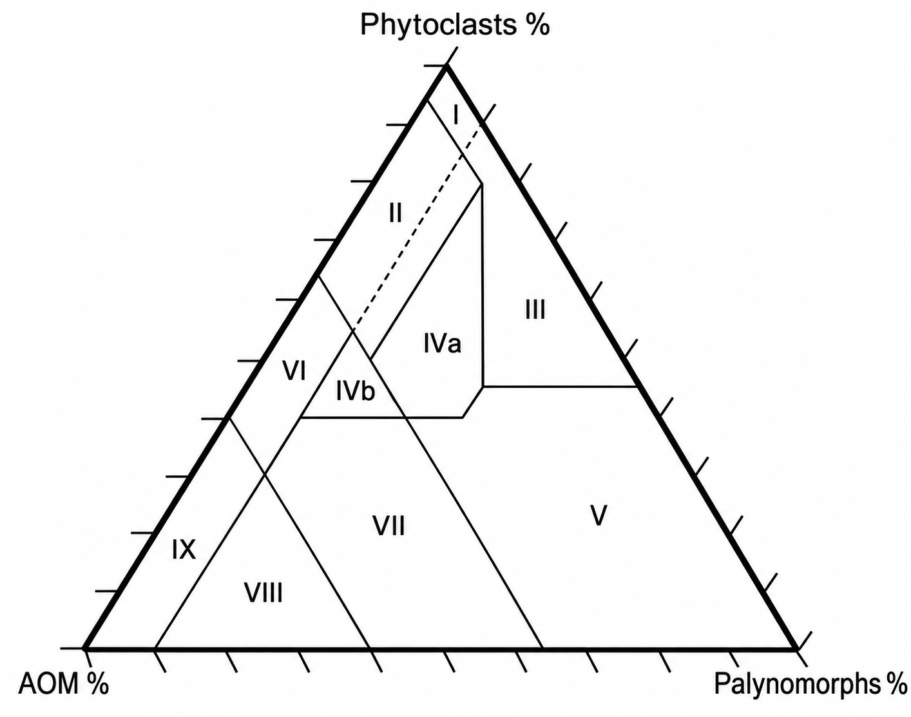

عن هذا المختبر (الإصدار الاحترافي):
يعتمد هذا المختبر على الموازنة الرياضية (Barycentric Mapping) لتسقيط الإحداثيات مباشرة على المرجع الأكاديمي الأصلي (Tyson 1995). عبر إدخال أعداد كل من (AOM، الفيتوكلاست، والبالينومورف)، يقوم النظام بحساب النسب وتسقيطها بصرياً وتصنيف العينة آلياً لمعرفة البيئة الترسيبية وجودة المصدر العضوي (نفط أو غاز).
يعتمد هذا المختبر على الموازنة الرياضية (Barycentric Mapping) لتسقيط الإحداثيات مباشرة على المرجع الأكاديمي الأصلي (Tyson 1995). عبر إدخال أعداد كل من (AOM، الفيتوكلاست، والبالينومورف)، يقوم النظام بحساب النسب وتسقيطها بصرياً وتصنيف العينة آلياً لمعرفة البيئة الترسيبية وجودة المصدر العضوي (نفط أو غاز).
Tyson (1995) Palynofacies Ternary Diagram
إدخال أعداد المواد العضوية

التحليل الجيوكيميائي للبيئات القديمة
| اسم العينة | AOM (%) | Phytoclasts (%) | Palynomorphs (%) | المنطقة (Field) | الإنتاج (Potential) |
|---|
دليل السحنات والبيئات الترسيبية (للاطلاع المرجعي)
| Palynofacies Field | Environment |
|---|---|
| I | highly proximal shelf or basin |
| II | marginal dysoxic-oxic basin |
| III | heterolithic oxic shelf (proximal shelf) |
| IV (a,b) | Shelf to basin transition |
| V | Mud-dominated oxic shelf (distal shelf) |
| VI | Proximal suboxic-anoxic shelf |
| VII | Distal dysoxic-anoxic "shelf" |
| VIII | Distal dysoxic-anoxic shelf |
| IX | Distal suboxic-anoxic basin |